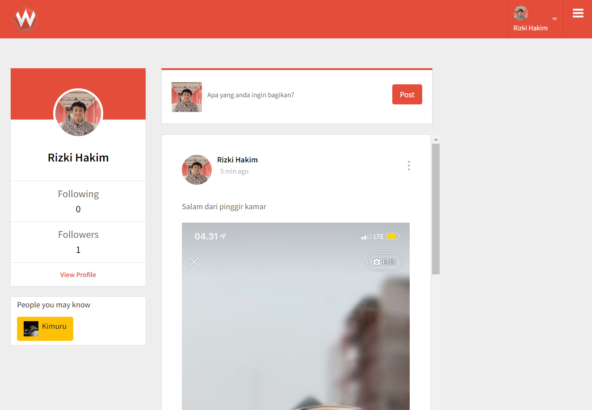
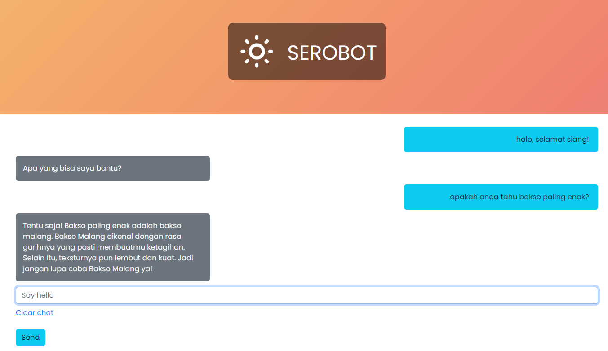

Created by Templatemo Modified with ❤️ by Rizki Amanullah Hakim @ 2022
About
As a 1 year experienced web developer, I am passionate about using my skills to solve real-world problems through code. I have a strong background in front-end development, with experience in HTML, CSS, and JavaScript. I am also proficient in back-end technologies such as PHP, MySQL, PostgreSQL, and am currently using Laravel and CodeIgniter 4 in my projects. I am also a beginner in React Native and data science, and am excited to continue learning and expanding my skills in these areas. In my current role, I have helped to develop and maintain several web applications for clients, and I am always looking for new challenges and opportunities to grow as a developer.

Resume
Full Stack Web Developer
PT TRUSUR UNGGUL TEKNUSA
MARCH 2022 - present
Projects
Trusur Dashboard
The Trusur Dashboard is a web-based application designed to facilitate efficient and effective management of company operations. This comprehensive tool offers employees a centralized platform for accessing and organizing their tasks and information, as well as for collaborating with colleagues and communicating with leadership. With its intuitive interface and robust suite of features, the Employee Dashboard enables PT Trusur Unggul Teknusa employees to optimize their workflows and productivity, ultimately supporting the achievement of the company's business goals.


Dapur Yatim Crowdfunding Website
Dapur Yatim is a non-profit organization that operates an orphanage for underprivileged children. To support our important work, we have developed a comprehensive, web-based crowdfunding platform. This platform allows individuals and organizations to easily make financial contributions to support our cause. With its user-friendly interface and secure payment processing, our crowdfunding website provides donors with a convenient and trustworthy way to make a difference in the lives of the children in our care.
Workwise Social Media
Workwise is a social media-inspired website that connects job seekers with a community of like-minded individuals. With its user-friendly interface and engaging content, Workwise offers a platform for users to share and discuss their thoughts and experiences in the job world. Unlike LinkedIn, which is focused on professional networking and job searching, Workwise has a more casual and social feel, similar to popular sites like Facebook and Instagram. Users can create posts, comment on others' posts, and connect with each other to build a supportive community. Whether you're looking for advice, support, or just want to share your thoughts on the job market.


E-Dashboard
The E-Dashboard website is a technical solution built using the Laravel web framework and the Tailwind CSS library. Laravel is a popular, open-source PHP framework that provides a robust set of tools and features for building modern web applications. It is known for its elegant syntax, clean design, and efficient performance. The E-Dashboard offers a wide range of features and functions, including real-time data visualization, customizable reports and graphs, and integration with popular business software. It is designed to be intuitive and easy to use, with a responsive web design that ensures it is accessible on any device.
SEROBOT ChatBot
Serobot's is a mini project I worked on my spare time. It is chatbot website that allows you to have conversations with a virtual assistant using GPT-3 technology. Whether you're looking for information on a specific topic, want to practice your language skills, or just want to have a casual conversation, Serobot's is a great resource.
